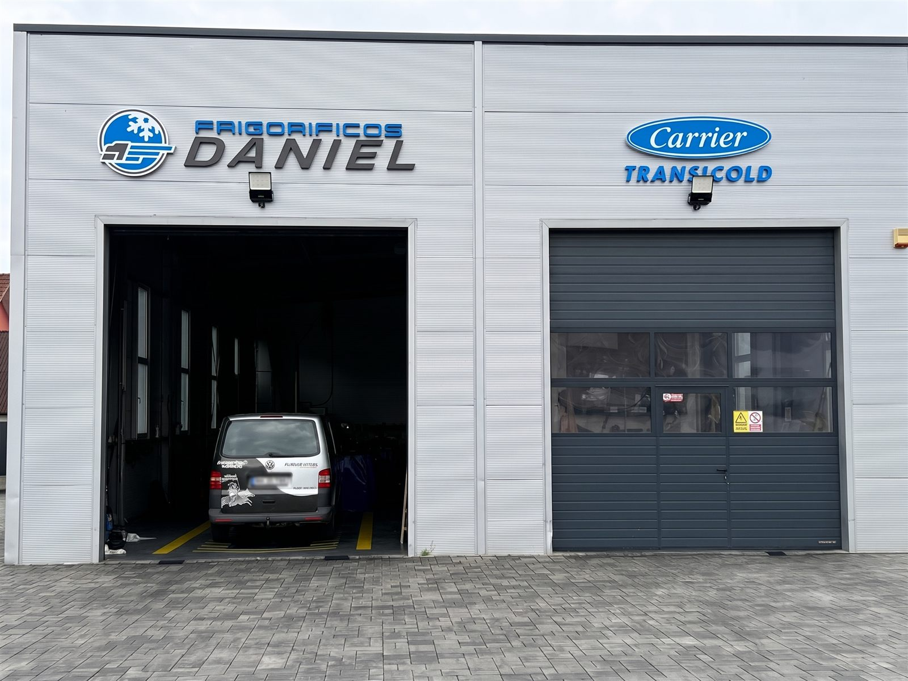
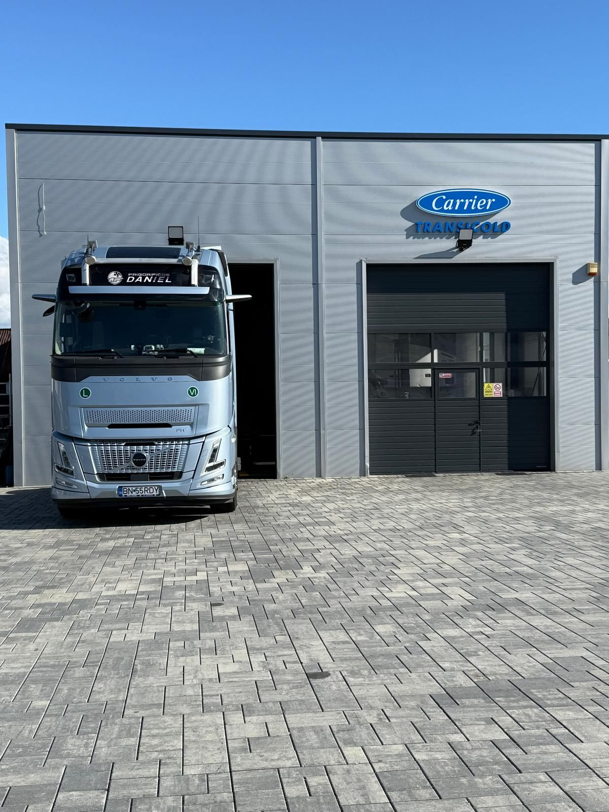
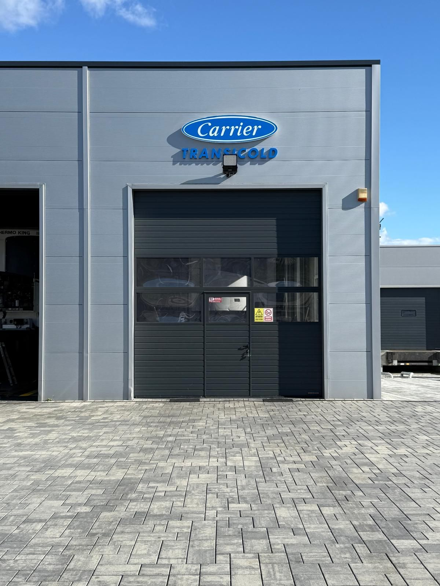

Service Autorizat Carrier Transicold – Bistrița
Soluții profesionale de refrigerare auto, mentenanță preventivă și reparații cu piese originale.
Sisteme Frigorifice cu Acționare Directă (Gama Utilitare)
Soluții de răcire eficiente pentru vehicule comerciale ușoare și vanuri de distribuție. Compresorul este acționat direct de motorul autovehiculului sau de sistemul electric.
- •
Neos 100: Agregat 100% electric pentru distribuție urbană fără emisii suplimentare.
- •
Seria Viento (200 / 300 / 350): Echipamente ultra-ușoare, fiabile și optimizate pentru livrări zilnice.
- •
Seria Xarios (150 / 200 / 300 / 350 / 500 / 600): Gamă versatilă cu control electronic precis al temperaturii pentru mărfuri proaspete și congelate.
Agregate Frigorifice Autonome pentru Camioane (Gama Monobloc Diesel)
Echipamente monobloc independente prevăzute cu motor diesel propriu, ideale pentru camioane de tonaj mediu și mare.
- •
Seria Supra (450 / 550 / 750 / 850 / 950): Capacitate mare de răcire, timp scurt de atingere a temperaturii setate și opțiuni multi-temperatură pentru compartimente separate.
Echipamente de Mare Capacitate pentru Semiremorci
Agregate de înaltă performanță proiectate pentru transportul internațional de lungă durată și menținerea strictă a lanțului frigorific.
- •
Tehnologia Vector (Vector 1550 / 1850 / 1950): Tehnologie electrică hibridă E-Drive pentru eficiență energetică maximă, emisii reduse și control termic de precizie (+/- 0.3°C).
- •
Seria Maxima (1300): Soluție mecanică robustă, recunoscută pentru fiabilitate și costuri reduse de întreținere.
Dispozitive de Monitorizare & Înregistrare Temperatură
Echipamente certificate EN 12830 pentru monitorizarea continuă a temperaturii și respectarea normelor de siguranță alimentară.
- •
DataCold 250: Înregistrator compact cu imprimantă termică integrată pentru eliberarea bonurilor la livrare.
- •
DataCold 500: Modul avansat cu senzori multipli și integrare cu sisteme telematică/GPS.
Galerie Carrier Transicold



Programează-te la Service Autorizat Carrier Transicold în Bistrița
Suntem pregătiți să menținem flota ta frigorifică în parametri optimi, cu piese originale și intervenții rapide. Contactează echipa Frigorificos Daniel SRL:
📍 Adresă: Calea Dejului nr. 1, Viișoara, jud. Bistrița-Năsăud
📞 Telefon: +40 740 559 553
🌐 Site web: frigorificosdaniel.com